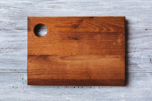
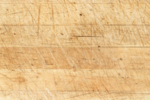

If you have a kitchen, and you’re an avid home cook, you probably have one of these: a cutting board. It’s an absolute necessity for food prep, and you most likely have either a plastic or wood cutting board that you use. But, which is truly better to invest in? For food safety, the most important aspect of your cutting board is how easy it is to clean and sanitize, says Katie Heil, a certified professional in food safety and a senior editor at StateFoodSafety.com.
The benefits of plastic
Chef Frank Proto, director of operations at the Institute of Culinary Education, says plastic trumps wood in terms of upkeep. “I love wooden cutting boards, I have a beautiful wood cutting board I use all the time at my house,” Proto says. “But you’ve got to be careful. For the most part, they’re hard to sanitize.”
And, they could leave you susceptible to bacteria that cause foodborne illness. The North Carolina Cooperative Extension notes that even though some wooden boards have antimicrobial qualities, microorganisms can become trapped and survive in a dormant state. Find out what other items in your kitchen may be secretly toxic.
That’s why in many municipalities, including New York City, it’s illegal to use wooden cutting boards in restaurants or food service establishments, Proto says.
“The plastic ones you can actually sanitize in your dishwasher, whereas the wooden ones you don’t want to put in your dishwasher because the wood will swell and absorb that water,” Proto says. Looking for a good plastic cutting board? Serious Eats recently tested plastic cutting boards and recommended the Oxo Good Grips Cutting Board Set.
The benefits of wood
That said, it’s not an open and shut question of whether plastic or wooden cutting boards are safer. You might think that because plastic cutting boards are easier to clean and sanitize, so that would logically make them safer. “However, plastic cutting boards tend to be more easily damaged than wooden boards,” Heil says. “Once your plastic cutting board gets scratched, there are more places for pathogens to hide and it’s harder to get them fully clean.”
Researchers who compared the number of bacteria found on plastic cutting boards to the amount on wooden cutting boards found that wooden cutting boards, regardless of whether they were new or used, had fewer bacteria after cleaning than used plastic cutting boards, Heil says. Another study showed similar results. Learn about some other everyday items that are dirtier than a toilet seat.
In general, wood is tougher than plastic, so knife scars don’t go as deep. The type of wood the cutting board is made from is also important, Heil says. The FDA recommends that you look for a hard, close-grained wood like maple, which is more resistant to water damage.
The best way to clean both wood and plastic cutting boards
When Porto uses his wooden cutting board at home, he scrubs it with kosher salt if it’s really stained, then cleans it with hot, soapy water. Then he dries it really quickly, he says. Wooden boards also need to be regularly treated with food-safe mineral or butcher block oil to keep them from drying out. Here are some more tips for cleaning a wooden cutting board.
An easy way to sanitize both wooden and plastic cutting boards? Add a tablespoon of bleach to a gallon of water, flooding the board with the liquid, then rinse it with clean water, and pat it dry, the USDA recommends.
If you’re still not sure which to use, why not try both? Ben Chapman, a food safety researcher at North Carolina State, recommends using plastic cutting boards for meat and wooden cutting boards for fruit, vegetables, bread, and cheese. Just be sure to clean them well and replace them when they get scratched. Now that you know the right way to clean your cutting boards, find out about the 50 kitchen mistakes you need to stop making.
Every product is independently selected by our editors. If you buy something through our links, we may earn an affiliate commission.
[single-card url=”https://amusedyak.info/food/recipes-cooking/gross-reason-need-two-cutting-boards/”]

The Gross Reason You Need Two Cutting Boards
[/single-card]
[single-card url=”https://amusedyak.info/home/cleaning-organizing/how-to-clean-a-cutting-board/”]

The 6 Best Ways to Clean a Wooden Cutting Board
[/single-card]
[single-card url=”https://amusedyak.info/home/cleaning-organizing/items-in-your-kitchen-you-need-to-throw-out-already/”]

13 Items in Your Kitchen You Need to Throw Out
[/single-card]